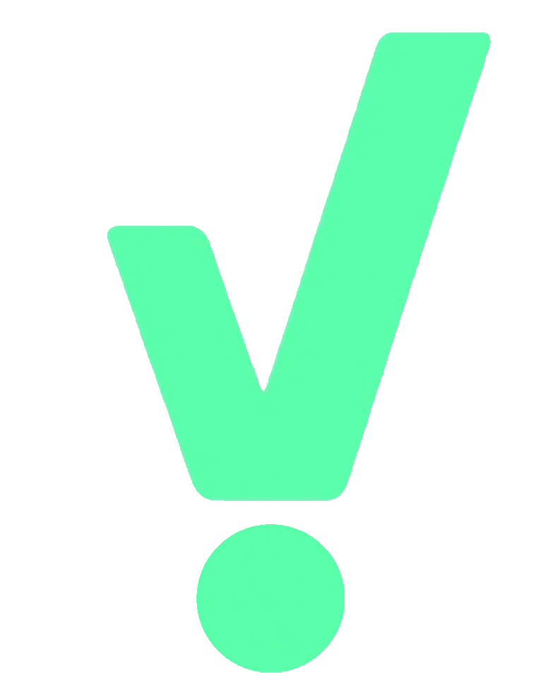

<app-nav></app-nav>
<div class="content-offset">
  <!-- <ngx-spinner bdColor="rgba(0, 0, 0, 0.8)" size="large" color="#fff" type="ball-scale-multiple" [fullScreen]="true">
    
  </ngx-spinner> -->
  <ngx-spinner [fullScreen]="true" >
    
  </ngx-spinner>
  <router-outlet></router-outlet>
</div>